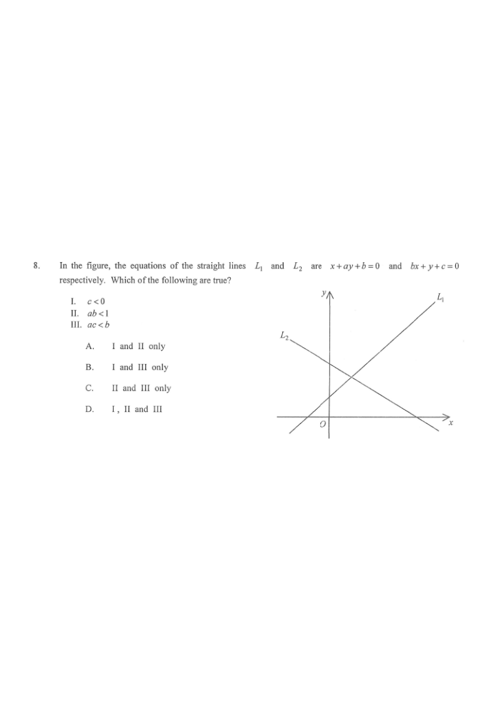

坐標幾何 · 直線的斜率與截距

$$L_{1}:\ ay=-x-b\ \Rightarrow\ y=-\frac{1}{a}x-\frac{b}{a}$$
$$L_{2}:\ y=-bx-c$$
由圖可見：$L_{1}$ 向右上升，斜率為正；$L_{2}$ 向右下降，斜率為負；$L_{2}$ 的 $y$ 截距在 $O$ 之上（正數），而 $L_{1}$ 的 $y$ 截距低於 $L_{2}$ 的。
$L_{2}$ 的 $y$ 截距是 $-c$，圖中為正數，所以 $c<0$。陳述 I 正確。
$L_{1}$ 的斜率為正：$-\dfrac{1}{a}>0\Rightarrow a<0$。
$L_{1}$ 比 $L_{2}$ 陡（斜率較大）：$-\dfrac{1}{a}>-b$，兩邊乘以 $a<0$ 時不等號反向：
$$-1<-ab\quad\Rightarrow\quad ab<1$$
陳述 II 正確。
$L_{1}$ 的 $y$ 截距 $-\dfrac{b}{a}$ 在圖中低於 $L_{2}$ 的 $y$ 截距 $-c$：
$$-\frac{b}{a}<-c$$
兩邊乘以 $a<0$，不等號反向：$-b>-ac$，即 $ac>b$。陳述 III 說 $ac<b$，與此相反，故 III 不正確。
快速核對：$a<0$、$c<0$ 使 $ac>0$，而 $b>0$，單靠正負號未能比較，必須用截距的大小關係。
因此只有 I 及 II 成立，答案為 A。